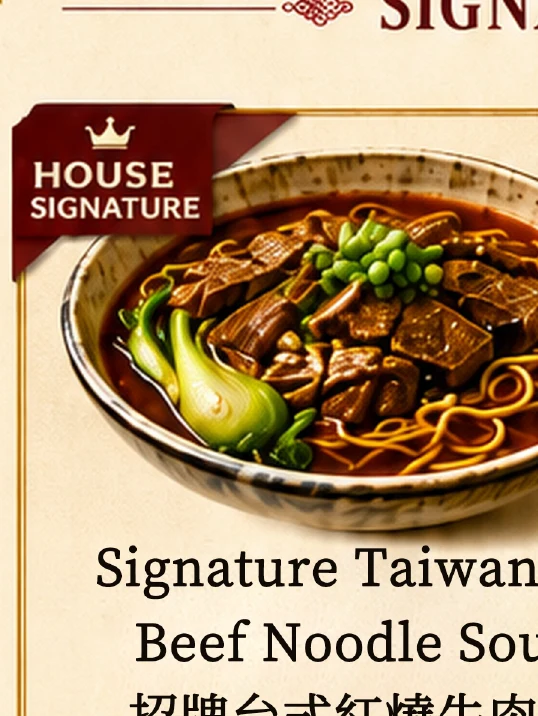
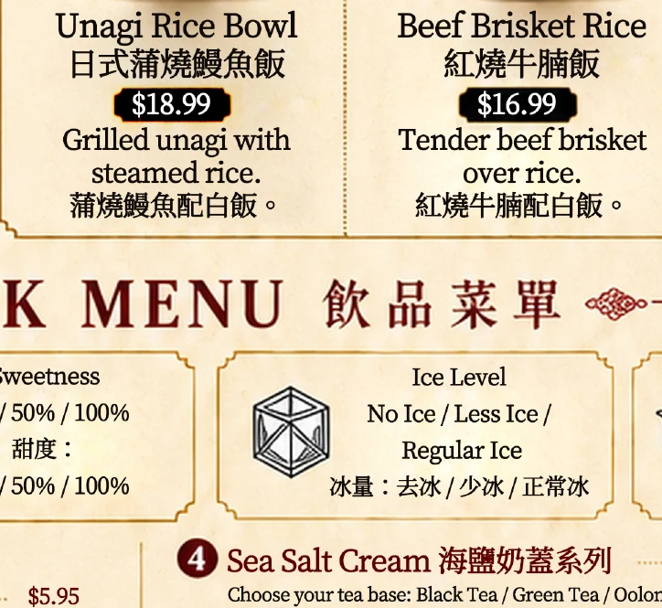
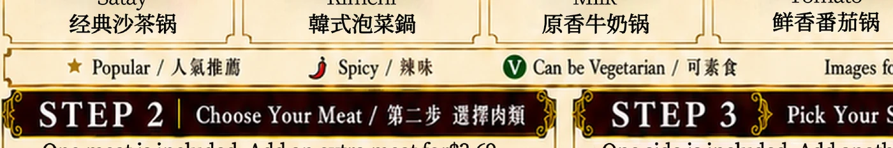

Included
1 soup base, large veggie set, 1 meat, and 1 rice or noodle side.
Japanese & Taiwanese Mini Hotpot · 一人一锅
Calgary hotpot for one, with fresh soup bases, sizzling Taiwanese snacks, rice and noodle bowls, and milk tea made for the table.

Hotpot set
1 soup base, large veggie set, 1 meat, and 1 rice or noodle side.
AAA beef, lamb, pork, or chicken. Extra meat is $3.69.
Rice, instant noodles, glass noodles, ramen, udon, or braised pork rice +$1.
Meet Our Chef
对于 Chef James 来说，一锅好汤不仅是一道料理，更是一份温暖人心的记忆。
James 出生于台湾，从小在充满烟火气息的传统家庭中长大。儿时厨房里飘散的汤香、夜市里热腾腾的小吃，以及家人围坐共享美食的幸福时光，都成为他日后踏入餐饮行业最深刻的启发。
拥有超过 30 年餐饮经验的 James，曾在台湾及海外多家知名餐厅担任主厨与餐饮顾问，专注研究亚洲风味料理、火锅汤底与传统家常菜。他始终相信，真正打动人心的美食，不是复杂的技巧，而是对食材的尊重与对品质的坚持。
来到加拿大后，James 希望把台湾人记忆中的温暖味道带给更多家庭。因此，他将台湾经典风味与日式精致饮食文化融合，打造出属于 Centre Street Japanese Hotpot 的独特特色。
从每天熬制的汤底，到精心挑选的肉品、新鲜蔬菜以及台湾特色小吃，每一个细节都凝聚着 James 对料理的热爱与坚持。
“最好的火锅，不只是让人吃饱，而是让人想起家。”
今天，当您来到 Centre Street Japanese Hotpot，品尝的不仅是一顿火锅，更是一位拥有三十多年经验的台湾主厨，倾注心血与故事所呈现的美味旅程。
Signature rice & noodles
Milk tea & drinks

Appetizers

$9.89
$8.89
$9.89
$6.89
$9.89
$7.89
$8.89
$8.89
Visit us
Mon-Fri 17:00-22:30
Sat-Sun 12:00-22:30
Hotpot · Milk Tea · Light Meals · Snacks · Family Dining